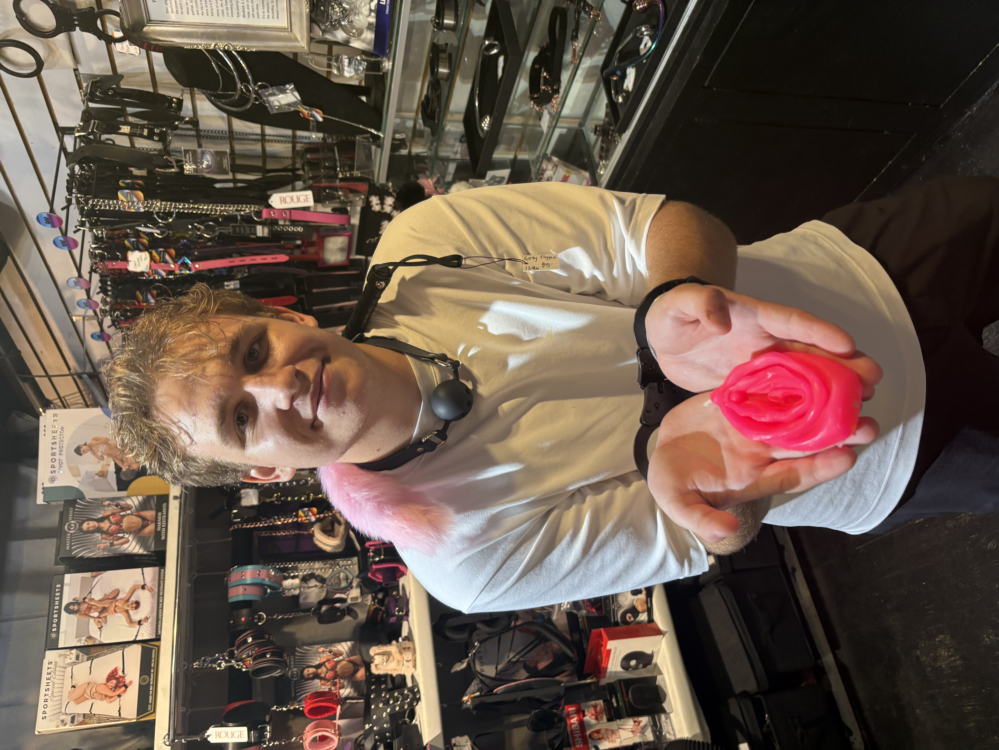
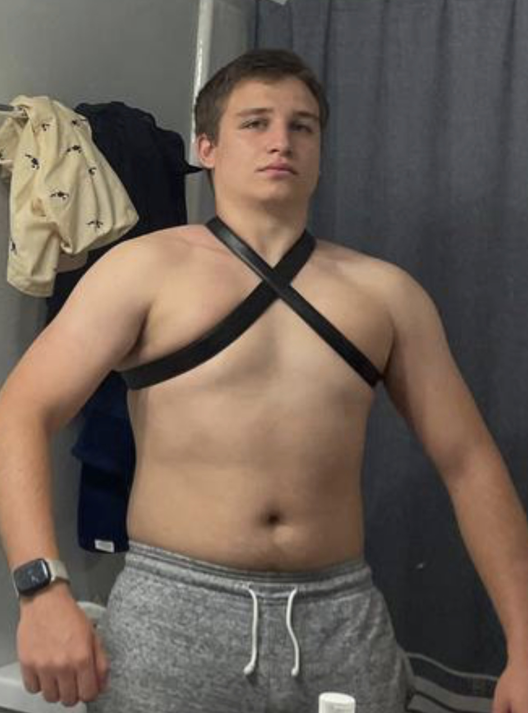

There is something I want to share with the people in my life: I'm gay. Writing those words feels like opening a window I've kept closed for a long time. I'm ready to let a little more of myself be seen.
I'm the same person you've always known. The same friend, with the same memories, the same sense of humor, and the same hopes for the future. Now, I get to be more open about who I am.
My body is part of my story.
It isn't an explanation for my identity.
There is another kind of vulnerability I want to talk about: feeling self-conscious about having a small penis. For me, that insecurity has been difficult to put into words. The jokes and expectations around men's bodies can make an already private worry feel even harder to share.
Being gay and feeling insecure about my body are two different parts of my experience. Penis size doesn't determine sexual orientation. I don't need to explain away who I'm attracted to, and I don't need a different body to deserve respect, affection, or intimacy.
“I don't have to earn acceptance by changing my body.”
I'm sharing this because I'd like us to make more room for honest conversations about body image. A small penis is not a punchline. If you've carried similar worries, I hope you can find someone who listens with kindness and takes your feelings seriously.
I may still have days when confidence doesn't come easily. Being open is a beginning. What would help most is knowing I can be myself around the people I care about.
More than one story.


A little kindness goes a long way.
You don't need the perfect words. Start by listening.
- Thank someone for trusting you with their story.
- Keep body jokes and comparisons out of the conversation.
- Ask what support would feel helpful.
- Let them decide when, how, and with whom to share.